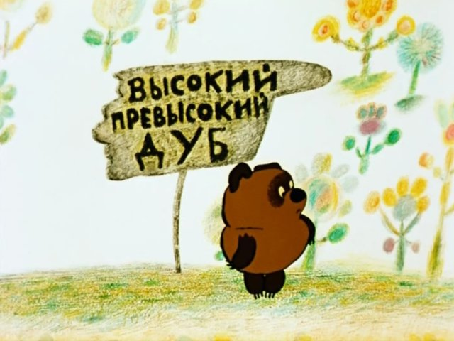
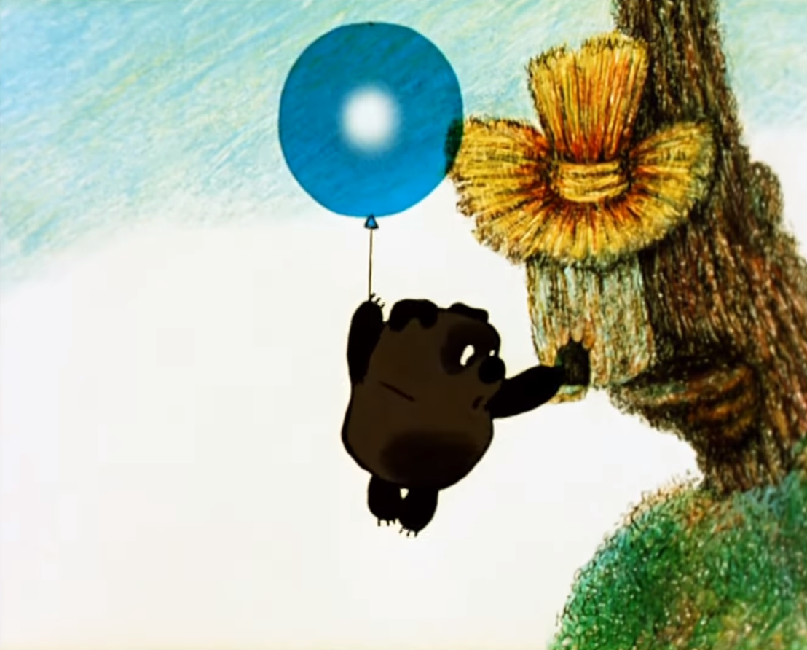
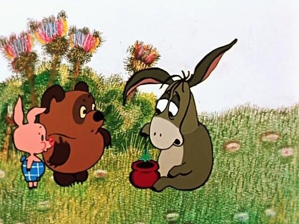

Винни-Пух
Написать Пуху
Винни-Пух — коричневый медвежонок из советских мультфильмов студии «Союзмультфильм». Он любит мёд, сочиняет песенки и часто попадает в смешные истории вместе с Пятачком.
О Винни-Пухе
Три мультфильма о Пухе снял режиссёр Фёдор Хитрук по мотивам книги Алана Милна. Сценарии написали Хитрук и Борис Заходер. Пуха озвучил Евгений Леонов, а Пятачка — Ия Саввина.
- «Винни-Пух» (1969)
- «Винни-Пух идёт в гости» (1971)
- «Винни-Пух и день забот» (1972)
Две истории из мультфильмов
Нажмите на картинку, чтобы открыть её в полном размере.
Как Пух добирался до мёда

В первом мультфильме Пух замечает пчёл и просит у Пятачка воздушный шарик. Он поднимается к дереву и притворяется маленькой тучкой, чтобы пчёлы его не заметили. План с тучкой проваливается, и Пух остаётся без мёда.
День рождения ослика Иа-Иа

В «Дне забот» Пух и Пятачок готовят подарки для Иа-Иа. Пух съедает мёд, а у Пятачка лопается шарик. Ослик всё равно радуется подаркам, потому что лопнувший шарик как раз помещается в пустой горшочек.